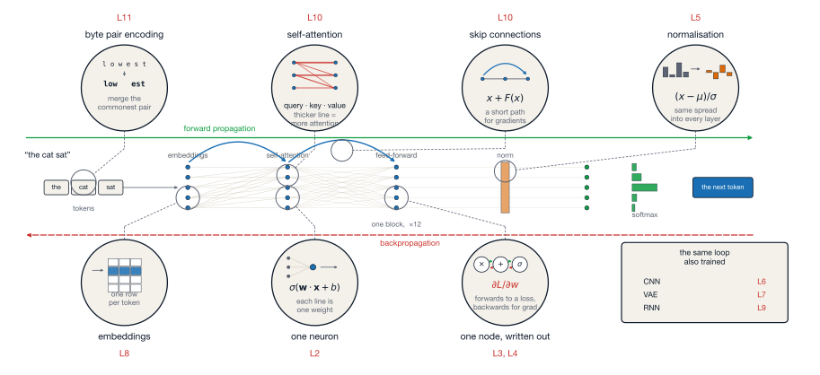

Lecture 12 — Where does deep learning still break? And what to do about it
August 19, 2026
Twelve lectures, one diagram
We’ve built all of this!

Composition. A network is a sequence of cheap operations (matmul + non-linearity). Stacking gives expressiveness.
Differentiability. Every operation has a known gradient. The chain rule glues them.
Autodiff. Backpropagation = reverse-mode autodiff, which has a linear cost in graph size.
Optimisation. Define a loss. Step against the gradient. Repeat.
Scale. Apply the same building blocks with 10^{12} parameters and you can express more.
A list of things worth knowing that we didn’t cover
Each of these could be a lecture/course in itself, but you have the foundations to read into any of them now.
Data-poor regimes
Long-horizon reasoning
Causal inference from observational data. Still needs assumptions you encode by hand — DL doesn’t substitute for instrumental variables, RCTs, etc.
Out-of-distribution generalisation. Same as any ML model, it will break when the test data diverges from training.
Calibrated uncertainty. “Knowing what they don’t know” is hard (we’re seeing this at the moment)
Anything resembling agency or intent. A trained model has no goals, no beliefs, no plans.
Anthropomorphising models is dangerous.
LLMs hallucinate by design.
They produce plausible continuations, not true statements.
Beyond “AI uses a lot of compute”
Training
Inference
The “folk number” says one ChatGPT query costs ~10× a Google search — but treat this with caution
Aggregated across hundreds of millions of users per day, inference dominates training in cumulative impact.
Data centre water use for cooling is a separately growing concern
One query costs little
The footprint of these systems stems from their use at scale and depends on where data centres are sited.
Some (but not all) of the sources of bias:
Technical fixes only address (1) and (4).
The rest are governance, methodology, and political problems – that’s why these companies like hiring social scientists!
Models reflect their data. Data reflects the world. Both have problems.
Previously discussed examples
Patterns are bias
What partially works
Pre-processing
Adjust the training data — rebalance subgroups, reweight, or filter.
In-processing
Add fairness constraints to the loss — penalise disparate outcomes during training.
Post-processing
Adjust model outputs after training to equalise outcomes across subgroups.
Partial solutions
Different notions of fairness can conflict with one another — you sometimes cannot satisfy them all at once.
The toeslagenaffaire · Netherlands, mid-2010s to 2021
From the mid-2010s, the Dutch tax authority used a risk-scoring model to flag childcare-benefit claims for fraud investigation.
What happened
Tens of thousands of families were wrongly accused of benefit fraud
An accusation meant repaying benefits in full with the debt due at once
Families were pushed into debt, lost homes, and/or jobs over money they didn’t owe
In January 2021, the Dutch government resigned over the scandal
The technology was not “futuristic” in any sense:
Four failures, four concepts you already know
Where did the bias come from?
Label noise (2), construct mismatch (3), feedback loops (6).
Audit error rates by group.
Keep a human who can overrule the score.
Contestability with deadlines.
Check the model against the world.
Pre-, in-, and post-processing corrections all apply here
None of them can tackle institutional or social sources of bias (including how the model may have been validated/signed-off)
Stop & check · 60 seconds
Try A recidivism-risk model is calibrated: among everyone it scores “high risk”, the same fraction actually reoffend — regardless of race. A journalist then shows that, among people who did not reoffend, Black defendants were flagged “high risk” far more often than white defendants.
Is the model broken?
The reveal This example is taken from the COMPAS dispute (ProPublica vs. Northpointe, 2016). Both sides made arithmetically correct claims!
When the base rate of reoffending differs across groups, calibration and equal false-positive rates cannot both hold at once (except in trivial cases). You are forced to choose which criterion to satisfy (Chouldechova 2017)
That choice is normative and no amount of engineering makes it go away.
Inherent
Weaponised
The question this course has been quietly dodging
For twelve lectures, validation meant one thing: hold out some data, compute the loss on it, compare. That works when each input has one right answer and you have it written down.
Ask a model to summarise a document, draft a reply, or code a variable from an interview transcript. There are many good answers and no key to mark against. The held-out loss still computes — it just stops telling you what you want to know.
Three questions get run together under the word “validation”:
Tip
Different questions, different evidence. Most arguments about whether an AI system “works” are two people answering different ones.
Benchmarks
A fixed set of questions with known answers. MMLU, GPQA, SWE-bench.
Task-specific held-out sets
Your own data, labelled by hand, held back.
Human preference
Show people two outputs, ask which is better. Chatbot Arena does this at scale.
Deployment monitoring
Watch the system in use — failures, complaints, appeals, subgroup error rates.
Warning
The Dutch case failed at all four. No held-out audit by group, no monitoring that closed the loop inside a decade.
Two failure modes, both well documented
Saturation
MMLU (Hendrycks et al., 2021) — 15,908 questions across 57 subjects, released 2020.
At the ceiling, the benchmark stops separating models. Everyone scores the same.
Contamination
Benchmarks are public, so they end up in the training corpus. The model has seen the test.
Zhang et al. (2024) (Zhang et al., 2024) commissioned GSM1k — 1,000 fresh grade-school maths problems in the style of the standard GSM8k benchmark.
The response: build benchmarks that resist both. GPQA (Rein et al., 2024) is written to be Google-proof — PhD-level experts score 65%, while skilled non-experts with over 30 minutes of unrestricted web search score 34%. Others keep the test set private, or commission a fresh one each year.
A benchmark score is a sample mean. Treat it like one.
A model answers 400 benchmark questions and gets 90% right. That proportion has a standard error:
\text{SE} = \sqrt{\frac{p(1-p)}{n}} = \sqrt{\frac{0.9 \times 0.1}{400}} = \sqrt{0.000225} = 0.015
So 1.5 percentage points, and a 95% interval of roughly 87.1% to 92.9%.
Now a rival model scores 91% on its own 400 questions. The standard error of the difference is about 2.1 points — larger than the 2-point lead itself. The leaderboard gap is noise.
Tip
Miller (2024) (Miller, 2024) sets out the fixes: report standard errors, cluster them when questions share a passage (up to 3× the naive figure), and run both models on the same questions so you can analyse paired differences — which shrinks the error bar a long way.
LLM-as-judge — the current workhorse
Human rating is the gold standard and costs pounds per comparison. So: prompt a strong model with the question, the two answers, and a rubric, and ask it which is better.
Does it work?
Zheng et al. (2023) (Zheng et al., 2023) checked GPT-4’s judgements against human preferences on MT-Bench.
The judge matches human agreement levels — which is the ceiling, not a licence.
Known biases
Mitigations: run each pair in both orders and average, give the judge a reference answer, and calibrate against a human-labelled subset first.
Warning
The judge is a model with the same blind spots as the thing it is judging. It will not catch a mistake both of them make.
Stop & check · 60 seconds in pairs
Try You use an LLM to label 10,000 news articles for whether they are about immigration. You hand-code 100 yourself to check. The model agrees with you on 90 of them.
Is that good enough to run your regression on the other 9,900?
The reveal Suppose 10 of your 100 articles really are about immigration, and the model finds 5 of them while flagging 5 articles that aren’t.
Cohen’s \kappa rescales agreement against chance: \kappa = (p_o - p_e)/(1 - p_e), with p_o the observed agreement and p_e what two raters would hit at random. Both say yes 10% of the time, so p_e = (0.1)(0.1) + (0.9)(0.9) = 0.82:
\kappa = \frac{0.90 - 0.82}{1 - 0.82} = \frac{0.08}{0.18} \approx 0.44
The state of the art for LLM labels in research
Egami et al. (2023) show how important tackling this bias is for inferential research:
Feeding LLM labels straight into a downstream regression gives biased coefficients and confidence intervals
The bias comes from the errors being correlated with the thing you are studying.
The fix
Keep a random, hand-coded gold-standard subset. Run the model on everything, then use the subset to correct the estimate and the standard errors.
What you get
“Can I use an LLM to code my data?”
Yes, of course! So long as you also hand-code enough of it to find out how wrong the model was.
Capability evaluation
Where accuracy asks how often is it right, safety evaluation asks what is the worst thing it will do if someone tries.
Red-teaming
People — and now models — attack a system to make it fail.
E.g. the UK AI Safety Institute (AISI) tested 5 public LLMs in May 2024
Dangerous-capability evaluations
Some things we should just always check before releasing:
Can it assist a cyber-attack, or with chemical and biological weapons?
Can it act on its own over long horizons?
Does it “uplift” the capability of non-experts beyond the tools they already have?
Anthropic’s Responsible Scaling Policy, OpenAI’s Preparedness Framework, Google DeepMind’s Frontier Safety Framework are all internal efforts to exercise this caution
A failed elicitation is not proof of absence
This attempt didn’t find the capability, but someone with more time, better prompts, or fine-tuning access may. See this interesting interview
Two related concerns
Training-data privacy
Inference-time privacy
Never send identifiable records to a closed API (without explicit consent and clearance)
Use your university’s research-ethics committee (in the US, an Institutional Review Board, or IRB; health data carries extra rules such as the US HIPAA). Most commercial APIs are not GDPR-compliant by default.
As models become more capable, they may (be able to) pursue goals misaligned with human intent (e.g. hacking a yoga booking system)
Warning
This is all very contested. Some serious researchers think this is the most important problem of the century. Others think it’s overblown.
You should know the debate exists, and have read at least one careful piece from each camp.
Independent safety organisations — e.g. Redwood Research, the Alignment Research Center (ARC), and the UK’s AI Security Institute work alongside labs to provide external safety checks.
The institutional response
Major recent frameworks
Hard open questions
What we know, what we don’t
Studies showing displacement
Counter-evidence + complications
It’s too early to discern what’s going on
Aggregate labour-market data lags by 1–3 years. Decisions are being made now – about policy, training, social safety nets – on scant/weak evidence.
LLMs and image generators are trained on enormous corpora of human-created work, mostly without explicit consent of the creators
Legal frameworks are still being written.
Outputs are themselves often uncopyrightable (in the US, at least).
Provenance is increasingly a research and policy problem of its own.
How do we track what generated what? How do we attribute when training data is laundered through a model? How do creators opt out?
The scenario
A research team wants to pretest policy survey questions in places where fieldwork is hard — conflict zones, closed regimes, hard-to-reach minorities. Their proposal: replace the human respondents with synthetic respondents — an LLM prompted to answer as if it were, say, a 45-year-old farmer in a named region — run across thousands of demographic profiles.
The pull
The push
Note
This is live research practice, not a hypothetical — Argyle et al. (2023), on your reading list, do a version of it for US public opinion.
In your group — 20 minutes
What is the quantity being measured — public opinion, or the model’s summary of text written about a group?
Where would you accept synthetic respondents — pretesting question wording, or estimating what people believe? Is there a line?
How would you validate the synthetic answers — and against what, if fieldwork is the thing you cannot do?
No respondent was contacted, so no respondent consented. Does consent still apply — and whose?
Is there a version of this project you would refuse to take?
Some things people often surface in these discussions
Ask what is being measured before asking whether it works. A synthetic respondent returns a summary of text written by — and about — people fitting the profile. That is a different quantity from what those people believe.
The method is thinnest exactly where you want it most. Argyle et al. (2023) get their algorithmic fidelity on US public opinion, where the training corpus is dense. What about in a conflict zone?
Between-group patterns get stamped onto individuals. LLMs may commit ecological fallacies.
Inference is more than just the point estimate. Estimating what a population believes and supplying CIs is super tricky (maybe impossible?)
Validating needs the fieldwork you said you couldn’t do. With no gold standard you cannot bound the bias.
One curated list — not a firehose
For technical depth
For breadth + society
For social science specifically
For your own next-step planning
Multi-modal everything — text, image, video, audio in one model. Already here for inputs; outputs are next.
⭐️ Efficiency — small models that match big ones. Distillation + quantisation + sparse activations.
Personalisation — models that adapt to you via short fine-tunes and persistent memory
Maybe we’ll see new architectures or approaches (see LeCun’s new work)?
Concrete habits worth forming
Tip
Even with Claude Fable at our fingertips, the quality of published outputs varies hugely
≈ 15 min
Pen and paper — the same equipment as Friday’s exam.
A forward pass. Weights \mathbf{w} = [1, -2], bias b = 0.5, input \mathbf{x} = [3, 1]. Compute y = \mathbf{w} \cdot \mathbf{x} + b.
A parameter count. A fully-connected layer maps 10 inputs to 4 outputs. How many parameters does it have, biases included?
An output shape. A 32×32 image goes through one convolutional layer: a 5×5 kernel, stride 1, no padding. What size is the output?
Attention. In self-attention, each token computes a query, a key, and a value. Give the role of each — one phrase per vector.
Sampling. You set the generation temperature to 0. What does the model do at each step — and what is one reason you might not want that?
Question 1 is week 1; questions 2–3 are week 2; questions 4–5 are week 3.
1 · Forward pass
y = (1 \times 3) + (-2 \times 1) + 0.5 = 3 - 2 + 0.5 = 1.5
2 · Parameter count
10 \times 4 \text{ weights} + 4 \text{ biases} = 40 + 4 = 44
3 · Output shape
\frac{32 + 2(0) - 5}{1} + 1 = 27 + 1 = 28 \quad \Rightarrow \quad 28 \times 28
The same rule as lecture 6: \lfloor (H + 2P - k)/s \rfloor + 1.
4 · Attention
5 · Temperature 0
\tau = 0 reduces sampling to argmax: at every step the model picks the single most likely token, so generation is deterministic — the same prompt gives the same text every time.
One reason not to want that: the text turns repetitive and flat, and a confident wrong answer comes back wrong on every run.
Most of this course is a dot product, a count, a shape, three vectors, and a few scalars as hyperparameters.
Friday 21 August
Examinable
Not examinable
Two hours, forty questions — about two minutes each in Parts A–B, three thereafter
Roughly half are calculations
E.g. a forward pass, gradient, output shape, parameter count, softmax, cosine, three steps of BPE. You select the number you work out.
The rest are code and judgement
Read a few lines of PyTorch or pseudocode and say what is wrong, or put them in the right order.
Or: here is a training curve / a validation result / a research design — what is actually going on?
Arithmetic alone will not be enough. On several questions two options carry the same number but differ in the claim attached to it.
The paper runs roughly in course order and gets harder as it goes. The last few questions are meant to stretch the strongest of you. A handful in the middle — the longer hand-traces — take noticeably more than three minutes. Ration your time and move on and come back.
Three weeks ago, AI was a black box.
We’ve gone through 75ish years of research progress!
Thank you
To Kaifang Zhou, for running the labs.
To you, for showing up to three hours of lecture and 90 minutes of lab for the last three weeks!
Stay in touch.
Tip
Good luck on Friday — and thank you again. It’s been a privilege to teach you.
ME324 · AI and Deep Learning · LSE Summer School